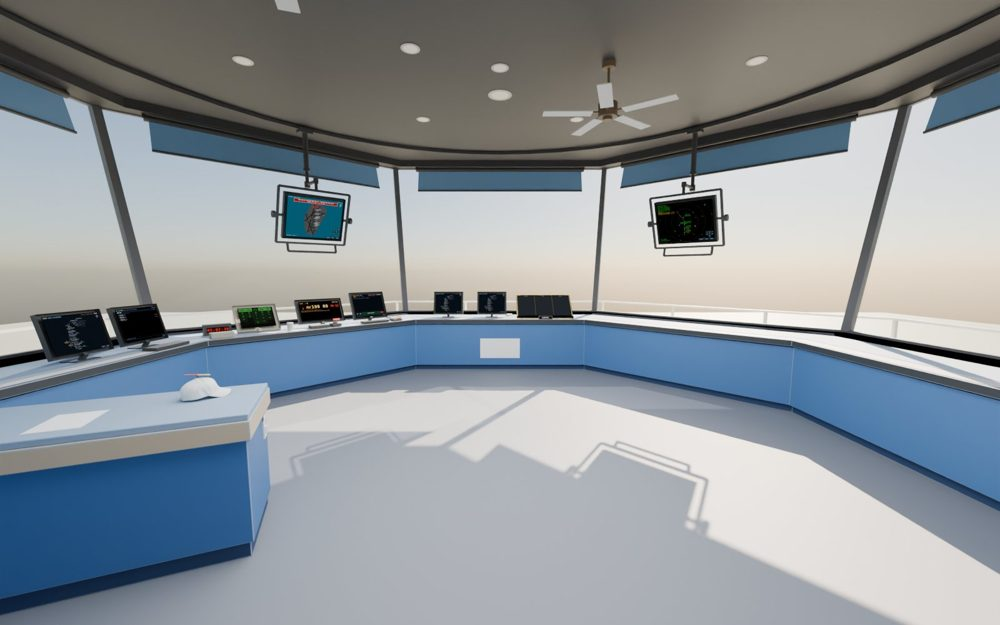
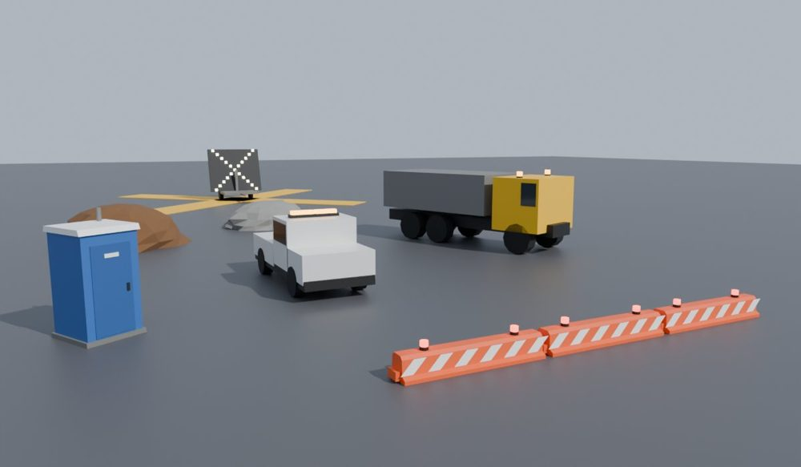
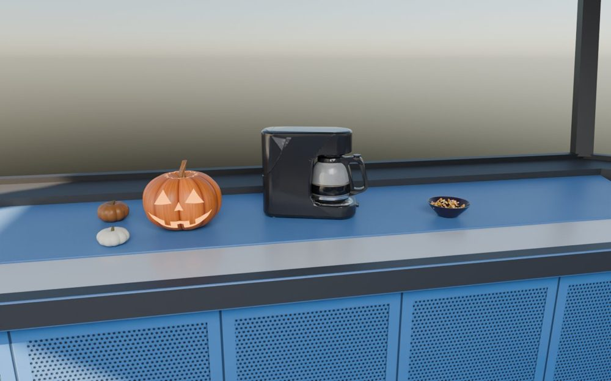
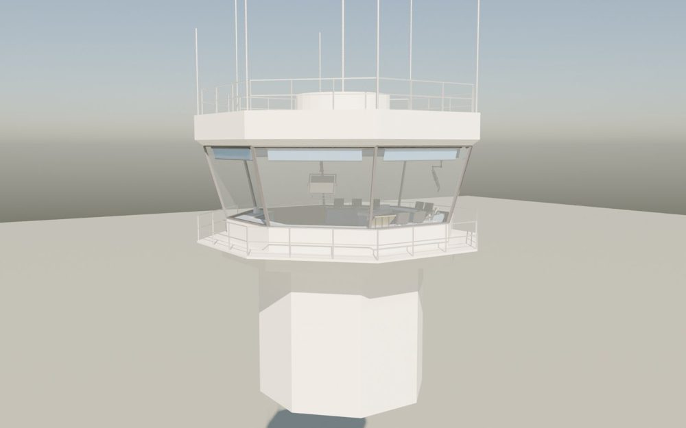

MSFS 2024 add-on · test build · 27 Oct 2026
VATFLOW Tower Cab
A tower cab you load like an aircraft at any airport. It moves itself up onto the sim's control tower and gives you a real tower-cab view of live VATSIM traffic, with working controller screens on the consoles: tower and ground radar, departure sequence, IDS, IDST releases, VATSMART, ramp maps, flight strip bays and runway / taxiway closures.

Downloads
VATFLOW Tower CabThe add-on. Unzip and drag the
DOWNLOAD
vatflow-towercab folder into your MSFS 2024 Community folder.User manual (PDF)Every screen and feature, setup, troubleshooting. 41 pages.
OPEN
Closures helper (optional)Small Windows tool (needs Python) that puts barricades, lighted X's and work vehicles into the sim for the CLOSURES screen.
DOWNLOAD
Install
- Close MSFS 2024.
- Unzip
VATFLOW-Tower-Cab.zipand drag the vatflow-towercab folder into your Community folder. Check that it ends up asCommunity\vatflow-towercab\manifest.json, not one folder deeper.- MS Store / Game Pass:
%LOCALAPPDATA%\Packages\Microsoft.Limitless_8wekyb3d8bbwe\LocalCache\Packages\Community - Steam:
%APPDATA%\Microsoft Flight Simulator 2024\Packages\Community
- MS Store / Game Pass:
- Start MSFS. New add-ons are only read when the sim starts, so after installing or updating, always do a full restart of MSFS.
Updating: delete the old vatflow-towercab folder from Community first, then drop in the new one.
First flight
- Assistance: crash damage off (the cab sits on the sim's tower).
- Free flight at the airport you control, any parking spot, aircraft VATFLOW Tower Cab.
- After about 10 seconds the cab goes up into the tower by itself. If not: any screen's MENU > TOWER SETUP > PLACE IN TOWER, nudge it into place and SAVE THIS SPOT.
- Connect vPilot as an observer so VATSIM traffic shows outside, and work the traffic in CRC as usual.
Set your VATSIM CID on TOWER SETUP to issue IDST releases. It stays in the sim's storage on your PC only.
What's new in this build
- DEP SEQ, DEP TIMER and IDS screens, runway safety alerts on the ground radar, final approach spacing on the tower radar, and picking an aircraft on one screen highlights it on all.
- Runway and taxiway closures: close them on a map; with the helper running, barricades with flashing lamps, lighted X's, work vehicles and site props appear in the sim.
- Halloween: a glowing jack-o'-lantern by the coffee maker (click it to blow the candle out). TOWER SETUP > HALLOWEEN switches the decorations off.


